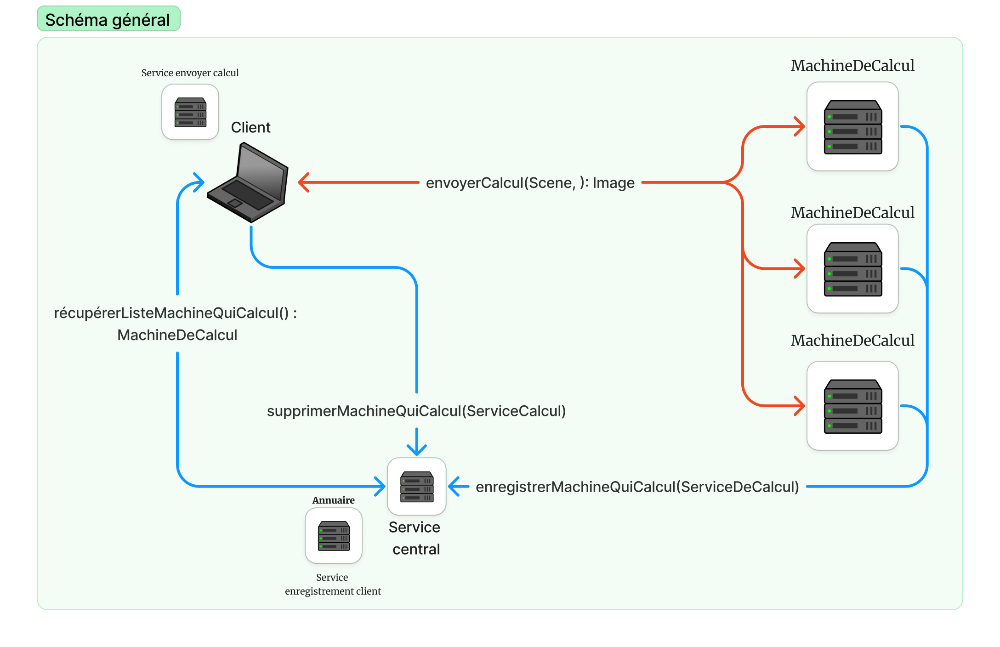

Mise en situation
Le serveur a pour rôle de gérer les inscriptions de calculateurs et de répondre aux demandes des clients qui recherchent un calculateur disponible pour effectuer le rendu d'une image.
Fonctionnement
Cette classe ServiceRaytracing implémente l'interface InterfaceServiceRaytracing. En général, cette classe gère une liste de machines qui effectuent des calculs. Les détails spécifiques de ces méthodes sont les suivants :
- machineQuiCalcul: C'est une liste d'objets qui implémentent l'interface `InterfaceServiceCalcul`. Ces objets représentent des machines capables de faire des calculs.
- prochaineMachine: C'est un index qui garde une trace de la prochaine machine à utiliser pour les calculs.
- supprimerMachineQuiCalcul(InterfaceServiceCalcul machineQuiCalcul): Cette méthode permet de supprimer une machine spécifique de la liste des machines disponibles pour les calculs. Un message est également imprimé pour indiquer qu'une machine a été supprimée.
- enregistrerMachineQuiCalcul(InterfaceServiceCalcul machineQuiCalcul): Cette méthode ajoute une nouvelle machine à la liste des machines disponibles pour les calculs. Un message est également imprimé pour indiquer qu'une nouvelle machine a été enregistrée.
- getMachineQuiCalcul(): Cette méthode retourne la prochaine machine à utiliser pour les calculs, en se basant sur l'index stocké dans la variable `prochaineMachine`. Après chaque appel à cette méthode, l'index `prochaineMachine` est incrémenté modulo la taille de la liste, ce qui signifie que lorsque toutes les machines ont été utilisées, l'index revient à zéro et recommence à parcourir la liste depuis le début.
En résumé, cette classe sert à gérer une liste rotative de machines pour effectuer des calculs en distribuant les tâches entre elles.
